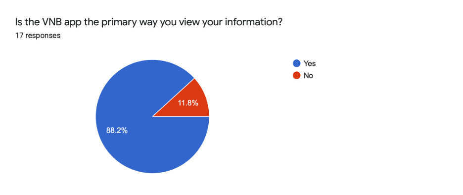
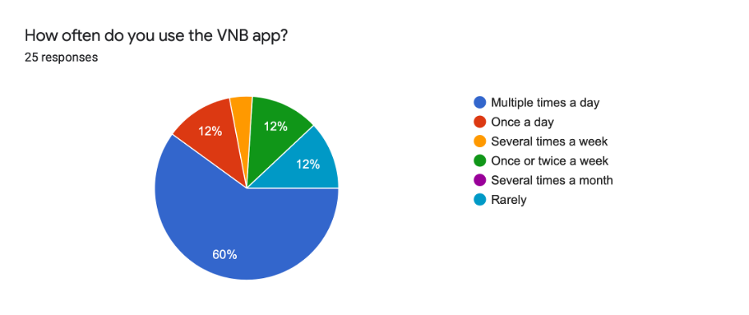
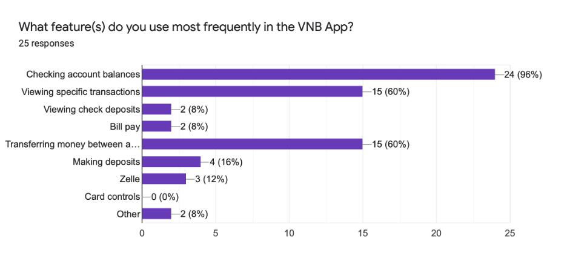
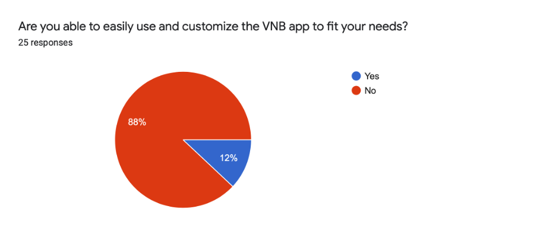
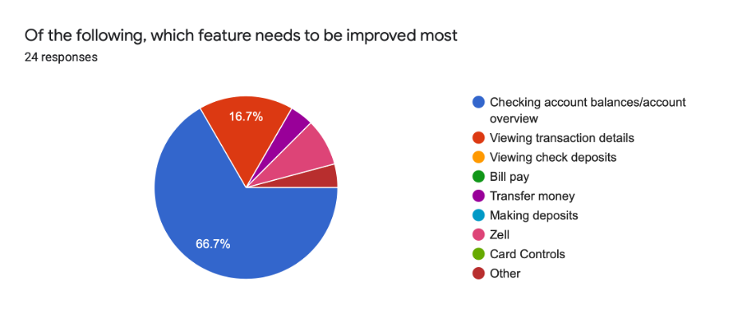
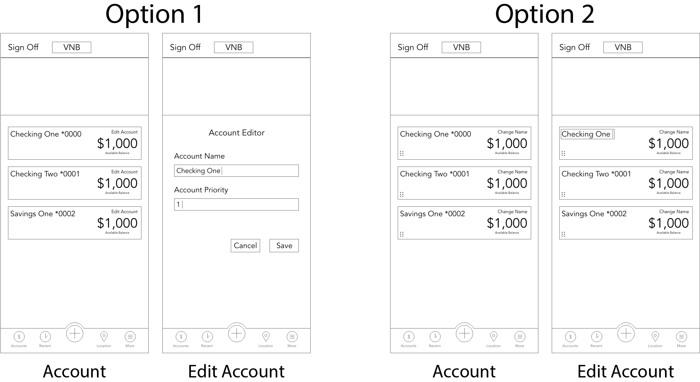
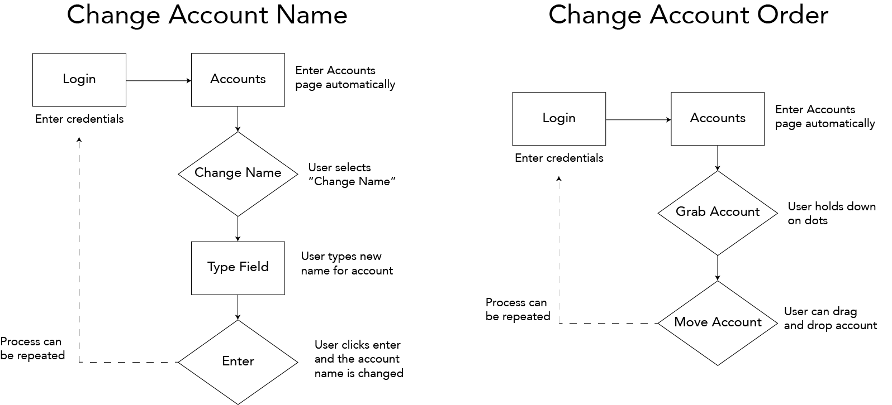
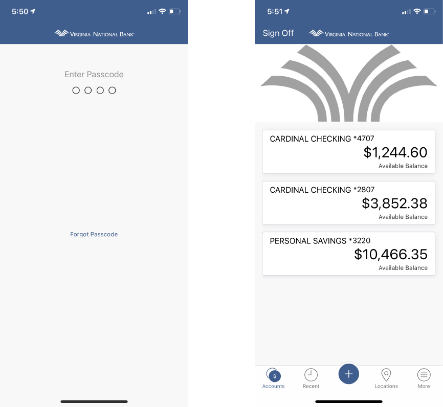
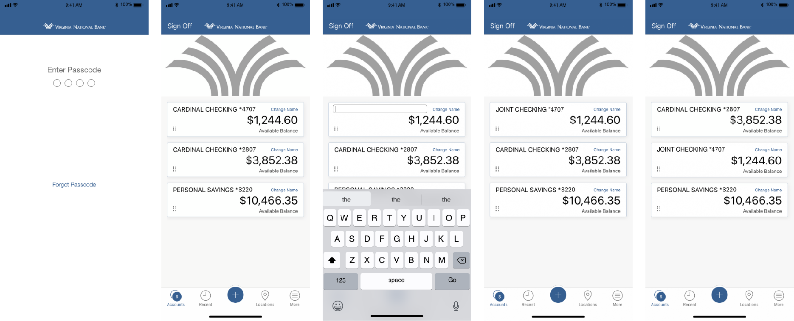

Virginia National Bank has locations in five Virginia counties, providing both personal and business banking options. Virginia National Bank’s mobile app, VNB, is used to check account balances, view individual transactions, transfer money between accounts, use Zelle, view check deposits, pay bills, and make deposits. The Virginia National Bank recently merged with a local bank system, The Fauquier Bank, meaning the number of people using the app has grown exponetially.
The Challenge and the Goal
As a daily user of the VNB app, I noticed that viewing account balances didn’t offer me the flexibility I wanted. Accounts appear in alphabetical order, with no options to change account names. Additionally, when looking at account details, there are redundant clicks and limitations. People around me who use the app echoed these concerns, and more. Since banking apps are so important, I wanted to find a way to offer users the flexibility and control they need.
User Research
App Usage
60% of users use the VNB app multiple times a day, with another 12% using it once a day. This means that the majority of app users use the app daily, with a minority checking 1-2 times a week or less.
Just over 88% of users use the VNB app as their primary source of information about their accounts. With such prevalent use, it is crtical that the app be easy to use and provide users with the information, flexibility, and control they need.
The most commonly used features of the app are checking account balances/overviews, viewing specific transactions, and transferring money. As the most commonly used features, it's important that they are easy to use.
Goals and Needs
Only 12% of users said that they were able to easily use the VNB app, meaning there are a lot of improvements that need to be made.
66.7% of users said that checking account balances/overviews brought them the most frustration. Since this is also the most frequently used feature, it should be a priority for improvement.
Pain Points
When asked what frustrated them about checking account balances/overviews, two comments appeared consistently, giving us our pain points.
Pain Point #1
The accounts appear in alphabetical order, and there is no way to adjust the order the accounts appear in.
Pain Point #2
The name of the account cannot be changed within the app, meaning users must navigate to the desktop site in order to change the name of their accounts.
Design Question
How might we improve the experience of VNB users checking their account information?
The Redesign
Ideation
After conducting user research, I spent some time thinking about the users goals and frustrations so that I could come up with an appropriate solution. The current app brings you to an overview page when you first log in. This page shows an overview of all your accounts and their current balances. Users seem to like this page, but are frustrated that they can't change the names of their accounts, or change the order they appear in. This is especially problematic for users with several accounts, especially if there are multiple accounts of the same time. This means the user has no way to differentiate their accounts, or to place primary accounts at the top of the page where they are more accessible.
There were a few ways I thought of to allow users to adjust account names and order of appearance. I started by writing my ideas down on a piece of paper. Once I had my ideas written down, I crossed out the ideas that would be more difficult or confusing to use. I narrowed my ideas down and ended up with a few ideas. I then made a wireframe of each idea, and asked users for feedback.

Users vastly preffered Option 2, where the name can be changed without leaving the overview screen, and the order of the accounts can be changed with drag and drop. Option 1 had two issues. One, it meant going to a separate screen in the app. Two, "Account Priority" was unclear, and users weren't sure what to put in order to change the order of accounts. Option 2, on the other hand does not require going to a separate page and has a clear, flexible method to change the account order.
User Flows
Now that I had a direction to go in, I made user flows for both changing the name of an account and changing the order the accounts appear in. Both user flows are quite simply, requiring only a handful of steps. Simplicity was the goal, though, since the content of the app is so critical, and occasionally complicated. These flows will allow users more control of the app, without requiring extra thought.

Before

After

About the Changes
These changes may seem minor, but they give the user the ability to customize their accounts so that they can manage their finances efficently and easily. Given the volume of complaints users had about not being able to change their account name or the order of accounts (12 out of 25 participants took issue with one or both of those limitations), this change allows users to complete a major need.
Conclusion
Banking apps have complex information by necessity, but that doesn't mean that using the app should be complex. When dealing with something as important as their financials, users require control, flexibility, and easy of use in their apps. Being able to change the names of their accounts and the order they appear in gives users the ability to see the information they want more easily. This, combined with the simplicity of making the changes, decreases user frustrations. Managing finances can be hard, but using an app to do it doesn't have to be.